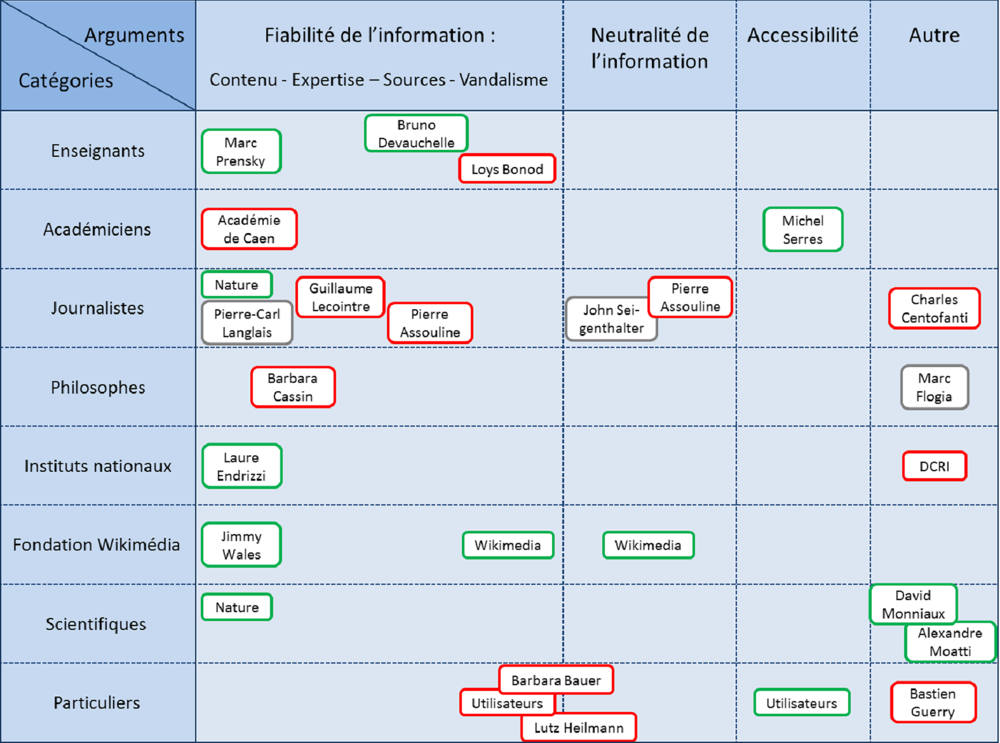

Carte des acteurs
Cette cartographie des acteurs a pour but de référencer tous les participants liés à la controverse que nous avons trouvé, et si possible de les regrouper. Ainsi, ce format de tableau à double entrée permet à la fois de réunir ou séparer les acteurs de la selon le sous-débat auquel ils prennent part, et selon leur appartenance professionnelle. Leur discours apparait lorsque l'on passe la souris sur leur nom.
Passer la souris sur un acteur pour voir son discours.
Marc Prensky (enseignant et orateur américain, dans le domaine de l’éducation) :
Wikipédia est très utile. Il n’est pas nécessaire de connaître les choses par cœur, mais plutôt de savoir chercher l’information à l’aide d’outils comme Wikipédia. Favorable à l’utilisation de Wikipédia au bac.
Bruno Devauchelle (enseignant et spécialiste des nouvelles technologies de l’information) :
L’intérêt de Wikipédia est que les références apparaissent en bas des pages. Les professeurs ne sont cependant pas formés à utiliser cet outil.
Loys Bonod (professeur de français):
Il explique dans « Comment j’ai pourri le web » comment il s’y est pris pour introduire de fausses informations sur Wikipédia, et ainsi piéger ses élèves. Il n’est pas opposé à Wikipédia, mais voulait démontrer à ses élèves qu’il faut se méfier des informations trouvées sur internet et faire preuve d’esprit critique en utilisant des outils comme Wikipédia.
Professeurs d’histoire et de géographie de l’Académie de Caen :
Ils critiquent le fait qu’il n’y ait pas de projet éditorial. Les articles sont reliés entre eux par des liens qui n’établissent des liaisons ni logiques ni cohérentes.
Michel Serres (philosophe, historien des sciences et membre de l’Académie Française) :
Il supporte le fait que Wikipédia permette la gratuité de la connaissance. Il considère Wikipédia comme un miracle d’auto-organisation.
Revue scientifique Nature :
La fiabilité des informations sur Wikipédia et dans l’encyclopédie Britannica est comparable : en moyenne 3.8 erreurs par article sur Wikipédia contre 2.9 dans Britannica.
Pierre-Carl Langlais (spécialiste des sciences de l’information et de la communication) :
Les méthodologies statistiques (McNemar's test) pour tester la fiabilité de Wikipédia sont mal appliquées et leurs résultats ne signifient rien. La fiabilité n’est pas une valeur absolue. Plusieurs études comparatives montrent que les encyclopédies traditionnelles sont tout aussi mauvaises (ou bonnes) que Wikipédia.
Guillaume Lecointre (zoologiste et systématicien français) :
Il critique le fait que n’importe quelle personne puisse contribuer à Wikipédia. Pour lui, la vraie connaissance est celle d’articles signés.
Pierre Assouline (journaliste et professeur à Sciences Politique) :
Il critique les sources sur Wikipédia. Pour lui, la source est la base de l'information, que celle-ci soit historique ou journalistique, et il n'y a pas de source sur Wikipédia.
Sous la surveillance de P. Assouline, des étudiants de Sciences Po. ont volontairement vandalisé certaines pages du site pour montrer qu'il était facile de corrompre l'information.
John Seigenthaler (journaliste et figure politique américaine) :
Pour lui, il faudrait récolter des informations sur les contributeurs afin de les responsabiliser pour limiter la diffusion de fausses informations. De nouvelles règles de participation ont été mises en place : à l’avenir, chaque personne souhaitant rédiger un article devra obligatoirement s’enregistrer (nom d'utilisateur et mot de passe).
Pierre Assouline (journaliste et professeur à Sciences Politique) :
Le fait que Wikipédia puisse être modifié par tout le monde implique que le dernier qui a parlé a raison. A ceci près que certains groupes de pression s'organisent très bien pour être toujours les derniers à parler. Il a relevé par exemple qu'à une époque, la première source (référencée en bas de page sur Wikipédia) de l'article sur l'affaire Dreyfus, était un ouvrage clairement anti-dreyfusard.
Charles Centofanti :
Il pense que le rôle de Wikipédia est de développer l’esprit critique.
Barbara Cassin (philosophe française, spécialiste de la rhétorique de la modernité) :
Elle critique la fait que les articles sur Wikipédia ne soient pas écrits par des experts. Selon elle, le savoir ne peut être produit par tous. Wikipédia est utile quand on ne connaît rien, et souvent à pleurer dès qu’on connaît un peu.
Marc Foglia (philosophe français) :
La politique d’écriture des articles sur Wikipédia implique un principe de surveillance mutuelle, « je pense donc je dis ? » Sur Wikipédia, le citoyen lambda s'engage.
Laure Endrizzi (membre de l’institut national de recherche pédagogique) :
C’est très exigeant d’écrire sur Wikipédia, car cela évolue très vite et les recherches empiriques sont de plus en plus nombreuses. Selon elle, Wikipédia devrait devenir une édition de référence. Elle a écrit un livre faisant « l'apologie » du nouveau model éditorial qu'est Wikipédia.
DCRI (Direction Centrale du Renseignement Intérieur) :
Ils s’opposent à Wikipédia, car Wikimédia partage des informations confidentielles voire classées secret défense sur les installations militaires françaises.
Jimmy Wales (créateur de Wikipédia) :
Le fait que le public sache qu’il y a des erreurs partout , même dans les sources dites de référence comme l’encyclopédie Britannica, est positif.
Wikimedia Foundation :
Ils luttent pour la neutralité de point de vue sur les articles Wikipédia, pour l’égalité des genres dans la publication des articles (90% articles sont actuellement rédigés par les hommes) et dans leur contenu (peu de femme célèbres sont représentées, ou pas à leur juste valeur).
Wikimedia Foundation :
Ils luttent contre le vandalisme, protection sur les sites les plus « sensibles ». Ils ont mis en place un vote en cas de désaccord dans la discussion.
Barbara Bauer (agent littéraire) :
Elle considère que Wikimedia héberge du contenu diffamatoire, étant décrite comme une des vingt pires agents littéraires sur Wikipédia.
Lutz Heilmann (député allemand) :
Il s’oppose à Wikipedia, car des articles du site font mention de son passé dans les services de renseignement de est-allemands (Stasi).
Bastien Guerry (ancien employé de Wikipédia) :
Il critique le système de dons sur Wikipédia : les dons pour Wikipédia sont envoyé à la fondation Wikipédia Américaine et non française.
Utilisateurs Lambda :
Ils critiquent le caractère parfois verbeux et anecdotique des articles, et la facilité de plagiat sur Wikipédia. Certains se demandent pourquoi se donner du mal à écrire un texte de qualité qui disparaîtra inexorablement avec le temps.
Utilisateurs Lambda :
Ils apprécient la rapidité des recherches, la gratuité de l’information, la possibilité de contribuer et la présence de sujets pointus sur Wikipédia.